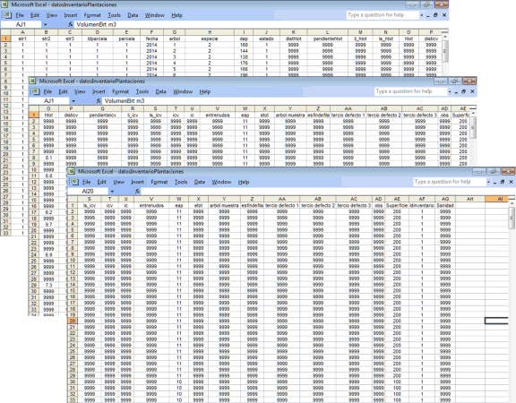

El ingreso de datos
se realiza a través de una planilla de cálculo con
formato excel. La planilla presenta un encabezado con los nombres
de los campos, y cada registro de la planilla excel es un
árbol del inventario. Pudiendo haber una o más parcelas
de datos en un único archivo con un total de hasta 5.000
filas. Las distintas parcelas en el archivo se identifican a
través de la columna Idparcela. A su vez cada parcela puede pertenecer a
distintos estratos, donde str1, str2 y str3, expresan un orden jerárquico de unidades
administrativas o silvícolas de hasta tres niveles. Por
ejemplo (str1 puede ser un número de campo, str2 un
número de lote dentro de un campo, y str3 el número de
rodal). Por ello para cada árbol en la planilla es necesario
establecer a que parcela (Idparcela), rodal (str3), lote (str2) y
campo (str1) pertenece.
Se utilizan un
total de 33 columnas [desde A ....hasta AG], y mediante el
procesamiento el programa agrega las columnas desde AH hasta AK con
valores calculados.

A continuación
se describe el nombre de cada columna y su significado. Para el
correcto procesamiento de los datos, la primera fila debe contener
el nombre de las variables, y los datos deben presentarse
encolumnados en el orden y secuencia que aquí se describe.
Cuando no existe información disponible para algún
árbol en particular debe llenarse la celda con el código
9999 (cuádruple 9), no deben dejarse celdas en
blanco.
Nombre de la
variable: Descripción
str1 estrato 1 o campo, código
numérico de asignación de una unidad del estrato 2 al
estrato administrativo o silvícola de orden 1, superior, p.
ej. [1.2.3....n]
str2 estrato 2 o lote, código
numérico de asignación de una unidad del estrato 3 al
estrato administrativo o silvícola de orden 2, intermedio p.
ej. [1.2.3....n]
str3 estrato 3 o rodal, código
numérico de asignación de parcela a estrato
administrativo o silvícola de orden 3 , inferior p. ej.
[1.2.3....n]
Idparcela código numérico donde se
identifica a que parcela pertenece cada árbol del archivo de
datos
p. ej.
[1.1.1.1,2.2.2,n.n.n.] Se repite el número de parcela para
cada árbol que pertenece a ella.
parcela: idem Idparcela
fecha: fecha de medición
[año]
p. ej..
[2014]
arbol: número orden del
árbol en la parcela Por ejem [1.2.3...n]
especie: código numérico de
identificación de especie
1: Pseudotsuga
menziesii
2: Pinus
ponderosa
4: Pinus
contorta
dap:
diámetro a la altura del pecho,
medido a 1,30 m de altura, expresada en [mm]
estado: código numérico para la
asignación de estado y forma del árbol
1: sano bien
formado
2: sano mal
formado
3:
enfermo
4:
muerto
En el caso de medir
alturas con hipsómetro completar (OPCIÓN NO IMPLEMENTADA EN ESTA
VERSION):
disthtot: distancia desde el observador al
árbol para la medición de altura total con
hipsómetro [metros].
pendientehtot pendiente del terreno tomada entre el ojo del
observador y su correspodiente punto en el árbol, para la
medición de altura total con clinómetro [grados],
disthtot
li_htot: lectura inferior realizada con
clinómetro a la base del árbol [%], medida en
porcentaje.
ls_htot: lectura superior realizada con
clinómetro al ápice del árbol [%], medida en
porcentaje.
disticv: distancia del observador al árbol
para la medición del inicio de copa viva
[metros].
pendienteicv: pendiente entre el observador y el
árbol para la medición del inicio de copa viva
[grados]
li_icv: lectura inferior realizada con
clinómetro a la base del árbol [%]
ls_icv: lectura superior realizada con
clinómetro a la base de la copa viva [%]
En caso de medir
alturas de forma directa con vara o vertex completar:
htot: Altura total del árbol, medido
con hipsómetro digital, vara, lectura directa
[metros]
icv: Altura de inicio de copa del árbol,
medido con hipsómetro digital, vara, lectura directa
[metros]
eap:
edad a la altura del pecho [años]
etot: edad a la altura del tocón
[años]
arbol
muestra: código para identificar en una
base de datos, si el árbol
se cortó como
muestra para realizar un análisis fustal.
Admite el valor [0
ó 1]
esfindefila: código numérico que indica si el
árbol se corresponde con el fin de una fila de
plantación
Admite el valor [0
ó 1]
tercio defecto
1: código
numérico que indica si en el tercio inferior del fuste existe
un defecto o no Puede valer [0 ó 1]
tercio defecto
2: código
numérico que indica si en el tercio medio del fuste existe un
defecto o no Puede valer [0 ó 1]
tercio defecto
3: código
numérico que indica si en el tercio superior del fuste existe
un defecto o no Puede valer [0 ó 1]
obs código
numérico que indica si el registro presenta observaciones
Puede valer [ 0 ó 1]
Superficie: Superficie de la parcela de
inventario [metros cuadrados]
Idinventario: Código numérico que indica el
número de inventario secuencial [1.2.3....n]
Sanidad: Código numérico que
identifica la sanidad del árbol, 1; sano, 2: enfermo, 3:
sirex, 4 muerto
Columnas que
calcula y se agregan a continuación de los datos, columnas
[desde AH.... AK].
Hestimada Altura estimada en metros a partir
del ajuste de la relación Altura Total - Dap
Icvpromedio Altura de inicio de copa viva
promedio
Volbrt
m3Volumen del bruto del
fuste en m3 calculado con ecuación de volumen de
especie
VPtaFina
m3 Volumen
hasta punta fina en m3 calculado con la ecuación de volumen
bruto y razón de volumen de la especie y valor de punta fina
[por defecto 150 mm]
Vol.
Producto_#
[m3/ha] Es la
sumatoria de los volúmenes, cubicados por Smalian, para el
producto nro #, definido por la punta fina y su correspondiente
longitud, (Ver definición de productos de
trozado) para el
árbol de dap y htot
Cant.
Producto_#
[m3/ha] Es la
sumatoria de todas las piezas del producto nro #, que pueden
obtenerse del árbol. (Ver
definición de productos de trozado). Son las piezas del producto nro # que generan
el Vol Producto_#.